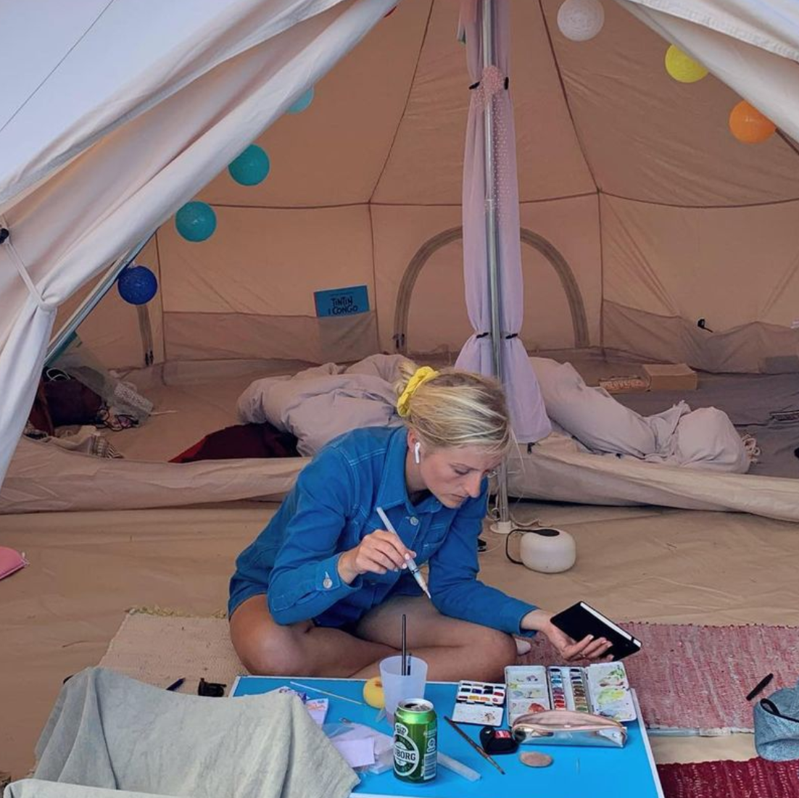
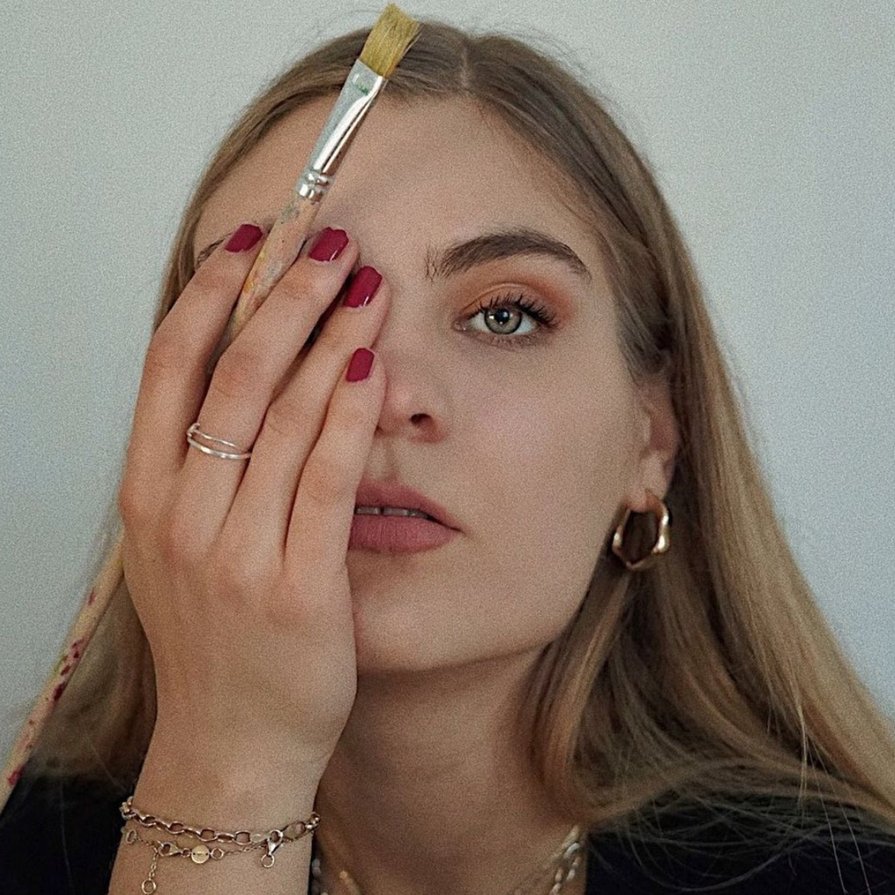
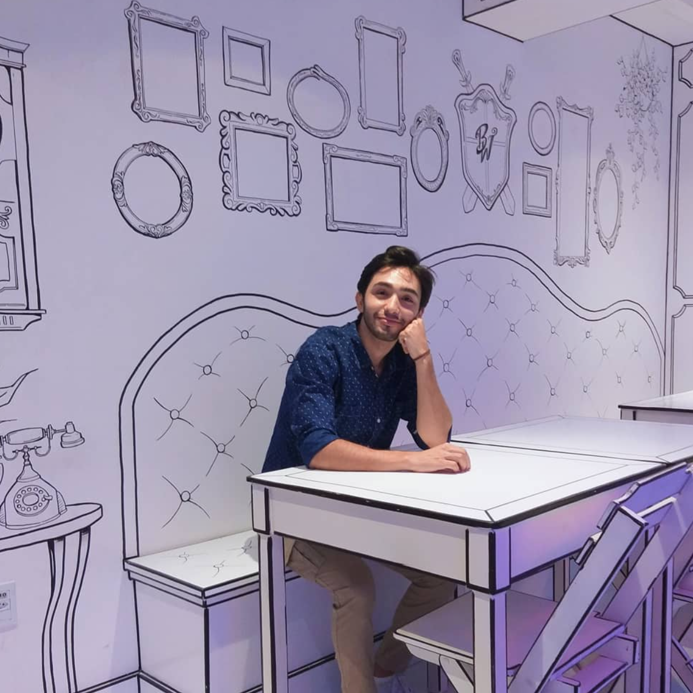
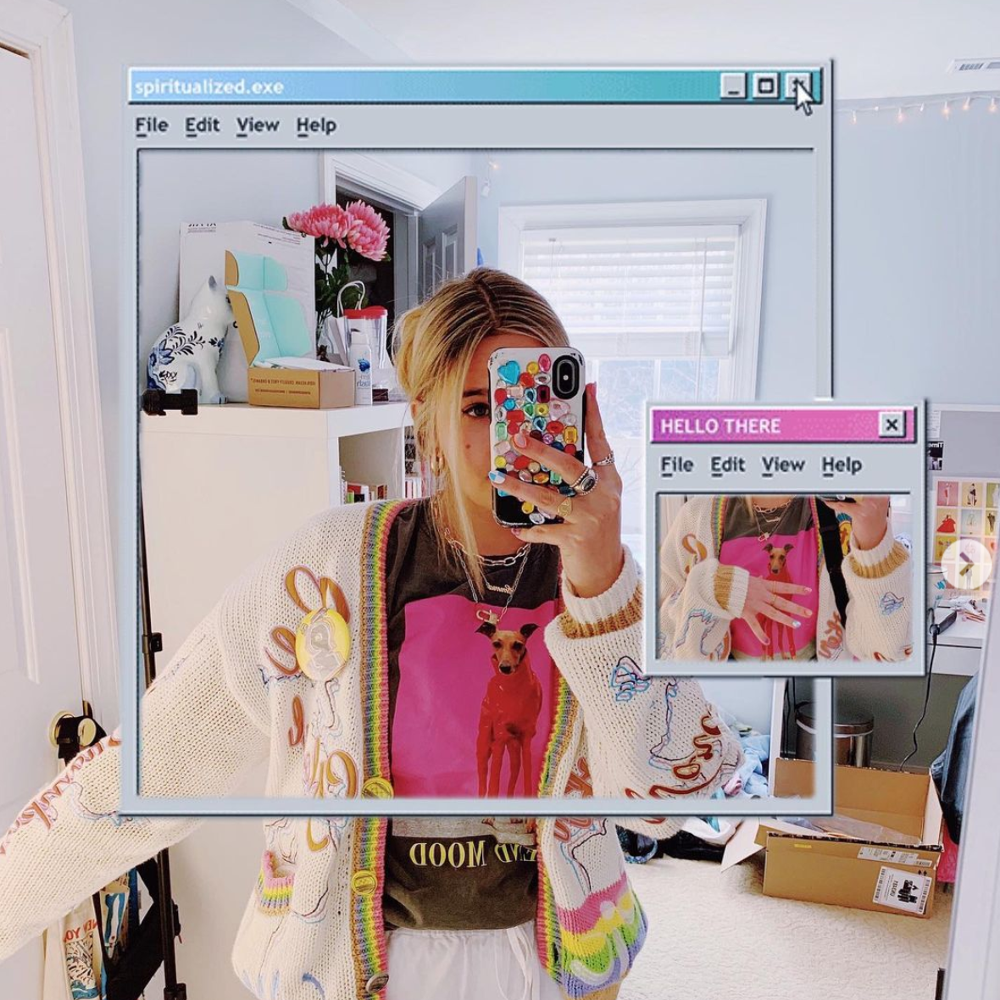

From coloring books and sidewalk chalk to scrapbooking and painting to Photoshop and digital art. Gather around, kids, let me tell you my story. Ever since I was little, I've
been very in touch with my creative side, but I never saw my creative hobbies as something I could pursue as a career. As a child, I wanted to be an astronaut, a marine biologist,
a psychologist, a politician- but did I really? This is a story that's been told, but, lucky for me, I diverged from "what I should do." Eventually.
But before I get there, let me describe my background a little bit more. When I was fifteen I was obsessed with Disney. I started replicating drawings of Disney characters that I found online
and from there, I branched out to other movie characters, celebrities, and people in my real life. I loved character design and I started and completed a drawing just about every day. As much as
I loved to draw, it wasn't until my senior year of high school that I took my first art/drawing class...and I hated it. I've never had a problem with an instructor, in fact, I was a bit of a teacher's
pet back in the day; but this instructor was THE WORST. I think that teachers deserve the world for what they do, but this one sat at her desk for an hour instead of teaching, she expected us to work
independently even though we had no training or textbook, and despite this, gave us very little freedom in what we chose to draw and graded harshly. I dropped the class at the end of
the first semester and didn't touch any tool but an HB pencil for two years (that's art-talk for "I didn't draw"). Okay. Rant over.
I decided to go into college as a film major because that sounded cool. (Don't make a major financial decision because it sounds cool.) By the end of my first year in college, I was very shocked,
confused, depressed, anxious, curious, and, sometimes, happy with my newfound adult life. To cope with this I did all kinds of things. One of those things was getting back into art. As a
film major, but closeted not film major, I wanted to fit in with my film major peers. I tried making art with video as my medium, which eventually led me back to painting, making videos of
aesthetically-pleasing paint blending, color pairing, and more. I made lots of "weird art videos" just for fun and thought that I was finally coming into my film major skin. But one day, while trying
to make film major friends, another girl asked me why I chose to major in cinema. I told her that it "just kind of fell into my lap," thinking she would be impressed by my answer. She looked horrified. I'll
never forget that feeling because it made me realize I was not where I belonged. Still, I went to my cinema classes and tried to force myself to like it. I didn't have a backup plan. Then October came.
If you haven't heard of it, Inktober is a drawing challenge created by artist, Jake Parker, in 2009. Every year in October, artists follow a prompt list, creating one ink drawing a day for every day of
the month. I had heard of the challenge many years ago and always wanted to do it. I'm not sure what pushed me to finally participate, but that year I did and that decision changed my life. I made my own prompt list of Halloween
and Autumn themes and every day I drew. My roommates took notice and encouraged me. I had never had any recognition over my art before. I had never been called or considered myself an "artist" until Inktober
2019. After October I looked into the design program at my school. I decided that I wanted to change my major to Visual Communication Design, but at the time, I had to apply to get into the major, applications were
only accepted in the Fall, and the deadline had already passes. So I was going to have to wait a whole year before I could even APPLY. As a sophomore, this was alarming. What if I didn't get in? I made a plan to
declare a minor in Design and change my major to Business Marketing because I figured it would pair well with design. So I did this right away so that I could enroll in design and marketing classes and finally be
done with cinema. However, I planned to apply to the Design major in the coming fall so that I could pursue the plan I REALLY wanted which was to minor in Marketing and major in Design. I started my design classes,
first learning how to use Photoshop and I absolutely loved it. When it came time to finally apply to change my major, the school had changed the process so that there was no longer an application or a chance of me
being rejected. I was able to change my major and minor with ease.
Now the more I advance in the Design program, the more I find things I love about the subject. I do Inktober every year now, and I've fully embraced calling myself an artist. My journey has barely just begun and I still have
many things I want to learn, many more things I don't even know I don't know yet, and I am just so happy to be here where I belong.
My Inspiration



